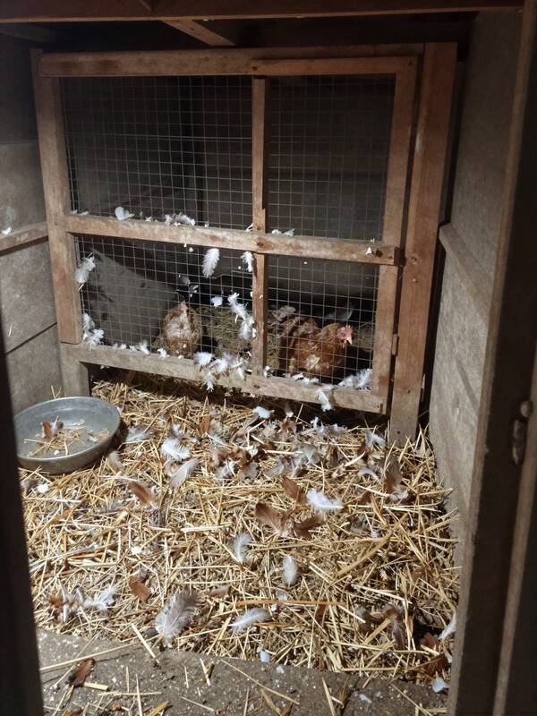
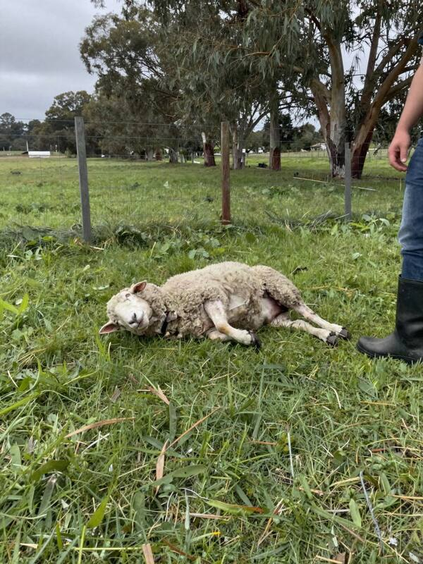
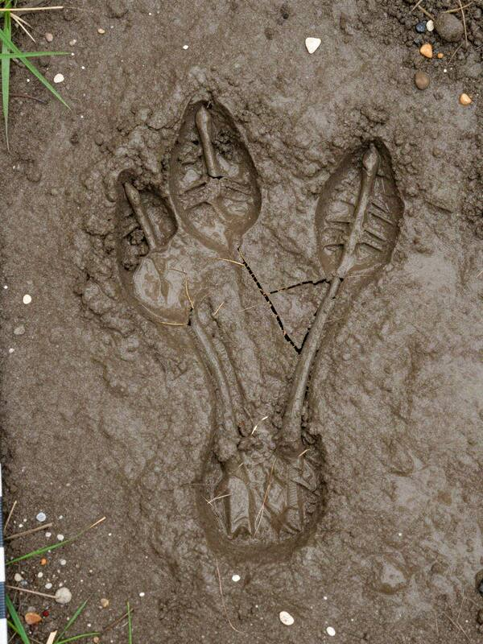
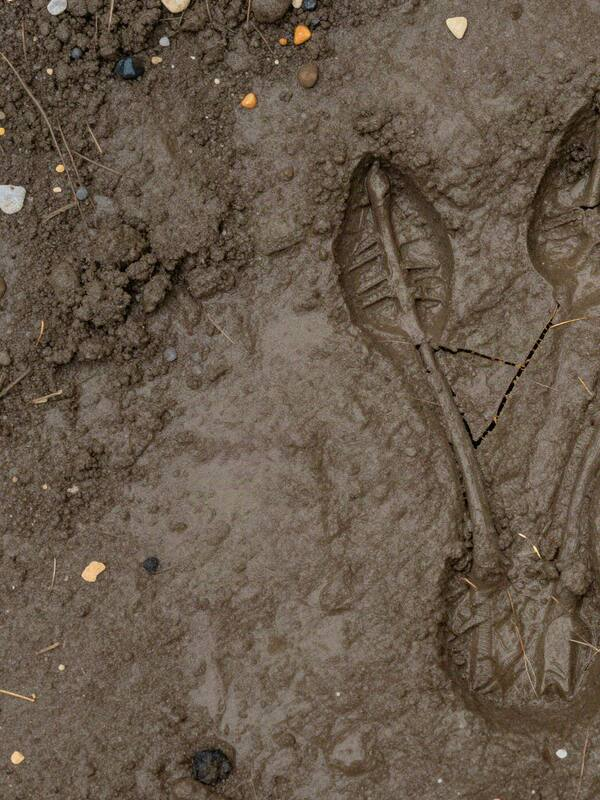

Evidencia digital · fuente abiertaPerfil TikTok @misterios.araucania · capturas
E03Publicaciones de @misterios.araucania, octubre de 2026
140 mil seguidores (tenía 8 mil el 1 de octubre).

¿Qué está matando las gallinas en Labranza?2 de octubre · 12 mil vistas

Tercer ataque: ovejas de Don H. Dos hoyos en el cuello, otra vez.14 de octubre · 89 mil vistas

ENCONTRÉ UNA HUELLA. Parcela Los Maitenes, Labranza.20 de octubre · 1,2 millones de vistas

Mataron una oveja en El Arrayán. Y otra vez la huella. Gracias al dueño por dejarme grabar.Viernes 30 de octubre, 18:30 · 640 mil vistas
 Open CaseEl Chupacabras de Labranza
Open CaseEl Chupacabras de Labranza